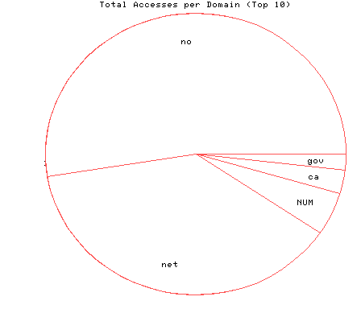
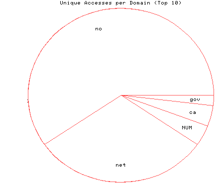

HTTP Server Domain Statistics
Covers: 10/16/95 to 10/19/95 (4 days).
All dates are in local time.
1 level, sorted by number of requests, 5 unique domains.
706 : 31 : 10/19/95 : Norway (.no) 511 : 16 : 10/19/95 : Network (.net) 66 : 2 : 10/19/95 : (numerical domains) 36 : 2 : 10/19/95 : Canada (.ca) 25 : 1 : 10/19/95 : US Government (.gov)

Statistics generated at Fri Oct 20 01:00:37 MET 1995, (C) Oslonett AS, 1995.